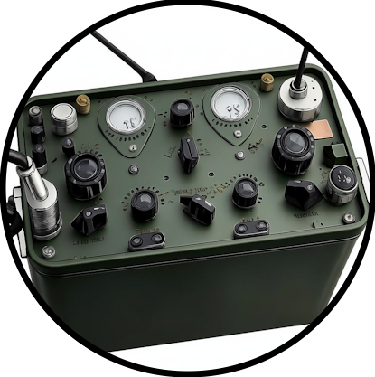

⚔️ Боевой модуль v13.082
v13.082
Если кнопка «Выход» не работает – просто закройте вкладку.
v13.082
Если кнопка «Выход» не работает – просто закройте вкладку.
Текущие модификаторы, влияющие на бой:
Как заменить карту шаблона: нажмите «Загрузить» у нужного шаблона → правьте карту → «💾 Сохранить текущую карту как шаблон» и введите то же имя — старый шаблон будет обновлён (второй копии не появится). Либо «⬆️ Заменить из файла» у шаблона — и укажите JSON с картой. Импорт файла больше не стирает остальные шаблоны: совпадения по имени заменяются, новые добавляются.

Рации: Телефоны:
Телефоны:
Ваш юнит столкнулся с вражеским .
Начать тактический бой?
Это текущая карта операции (местность + все метки). Вставьте этот код ВМЕСТО содержимого файла maps/valencia_terrain.json — и все метки будут зашиты в код сценария (будут подгружаться при выборе сценария).